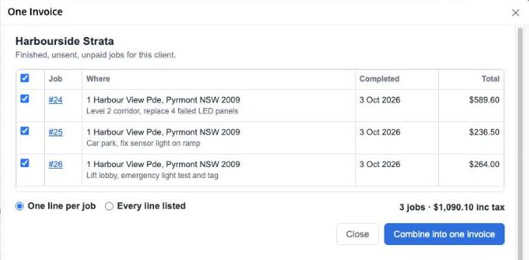
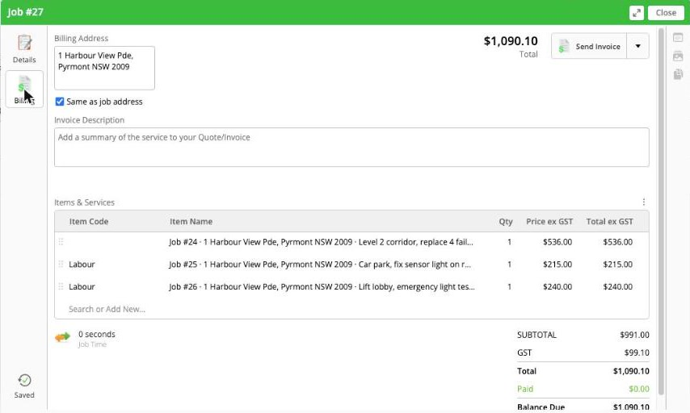

Bill several finished jobs for the same client on one invoice, without double billing.
Help guide. Last updated 4 October 2026.

ServiceM8 makes one invoice per job. Property managers, strata, schools and commercial clients often want one bill for all the work you did for them that month. One Invoice takes the finished jobs you pick for a client and creates a single new invoice job with their billing on it. Each original job is set to $0 and labelled, so nothing gets billed twice.
| Permission | Used for |
|---|---|
| Read and manage jobs, create jobs | Finding the client's finished jobs and creating the combined invoice job |
| Read and manage job materials | Copying billing lines to the combined invoice, switching them off on the originals, and switching them back on if you undo |
| Read customers | The client's name and billing address |
| Add job diary items | A note on every job it touches, saying what it did |

The combined invoice is an ordinary ServiceM8 invoice and goes to your accounting software when you approve it, like any other. Where possible, its lines reuse the items already on the original jobs, so no new items are added to your item list. Lines made up of several items (one line per job) use the job's biggest item.
If ServiceM8 asks you to pick an income account for new items when you approve, you can set a default under Settings › Preferences › Invoicing.
Open One Invoice on the same client. Combined invoices that haven't been sent are listed under Combined invoices you can still undo. Undo switches the original jobs' lines back on, removes the $0 lines and deletes the combined invoice job.
If you'd already approved the combined invoice to your accounting software, void it there as well. One Invoice can't change your accounting software.
Only jobs that are Completed, unsent and unpaid can be combined. Jobs already on a combined invoice are shown under that invoice instead. Jobs with nothing to bill are listed but can't be ticked.
ServiceM8 works out GST per line. Rounding on a combined line can occasionally differ by a cent from the sum of the originals. One Invoice tells you if the totals don't match.
Email admin@meridianlabssoftware.com. We usually reply within one business day (Sydney time). Please don't send customer details or passwords by email; a job number is enough for us to help.
One Invoice is made by Meridian Labs, an independent developer. It is not made or supported by ServiceM8. See our privacy policy.